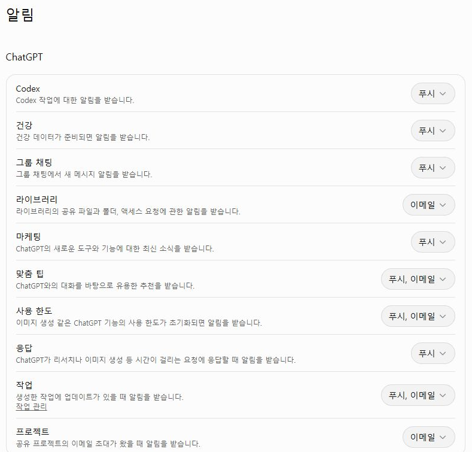
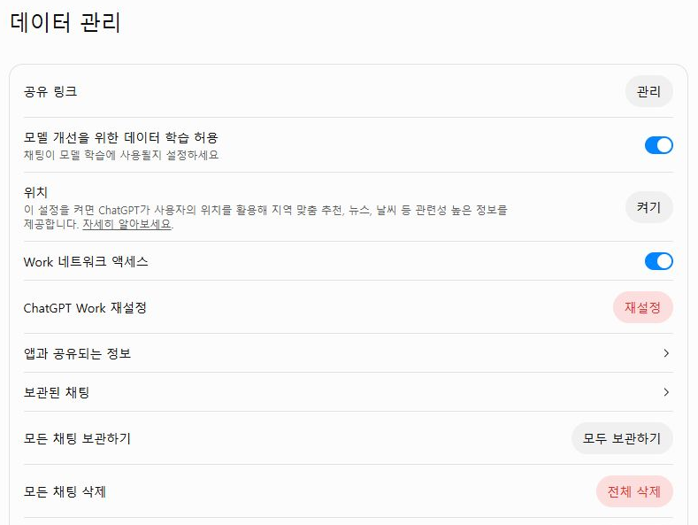
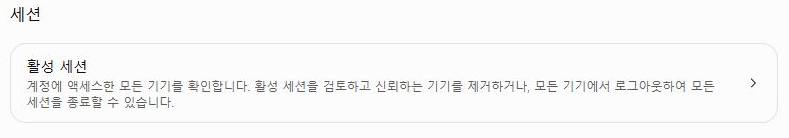

실제 조작 화면을 순서대로 연결했습니다. 아래 사진을 누르면 원본 크기로 열립니다.Bravo AI Life 기본 사용법 · 1차시로 돌아가기
STEP 08
알림·데이터 관리·보안 설정 읽기
설정의 용도를 구분하고 수업용 계정에서도 필요한 항목만 확인합니다.
알림: 어떤 소식을 어디로 받을지
항목마다 전달 경로가 다를 수 있습니다. 수업 중 필요 없는 알림이 오면 해당 줄에서 현재 선택을 확인하세요. 컴퓨터 자체의 알림 설정과도 구분합니다.
데이터 관리: 공유 링크와 모델 개선 구분
공유 링크는 누구에게 어떤 대화 링크가 전달됐는지 관리하는 곳이고, 모델 개선은 대화를 모델 개선에 사용할지에 관한 선택입니다. 채팅 보관과 삭제는 별도 동작입니다. 수업에서는 개인 기록을 열거나 전체 삭제할 필요가 없습니다.

보안 및 로그인: 활성 세션
세션은 로그인 상태인 기기나 접속을 확인하는 항목입니다. 공용 PC에서는 수업 뒤 로그아웃하세요. 사진은 설정 항목까지만 보여 주며 실제 기기나 계정 정보는 열지 않았습니다.
